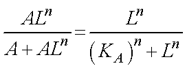
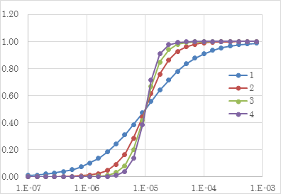
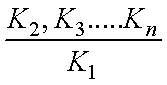

Hillの式-06
Hill係数とは？
Hillの式は，今までの計算のように，

となりましたね．

さて．．．．ここからは不確定な議論ですが．．．．．
n，の持つ意味
はいったい何なんでしょう？
実際の実験で上記のグラフのようなカーブを作り，Hillの式でフィッティングを行い，Hill係数，n，を見積もるのですが，私の今までの理解では，
n ： 協同性の強さ
と理解していたのですが，計算によると，
n ： 何ステップが協同性により早められるのか？
ではないのかな？と思いました．
協同性の強さ，は，

であり，最初のステップの平衡定数に比べて，次移行のステップの平衡定数がどの程度違うか，が指標になるのかな？と思いました．
これに関しては，まだまだ勉強しなくてはなりません．．．．